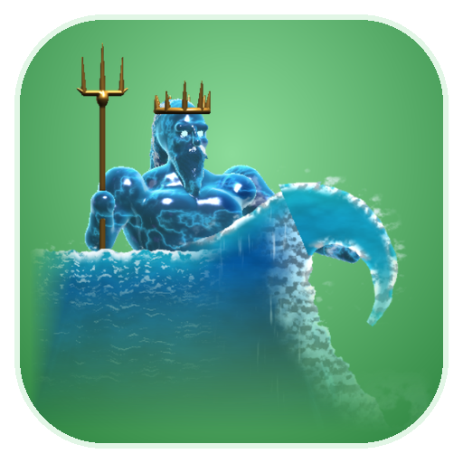
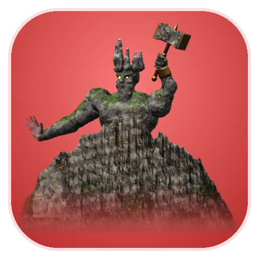

Zombie Runner — New gifts: Sơn Tinh & Thủy Tinh
Thủy Tinh (Helper, actionId 17) · Sơn Tinh (Enemy, actionId 16) · 5000 units




Thủy Tinh (Helper, actionId 17) · Sơn Tinh (Enemy, actionId 16) · 5000 units

